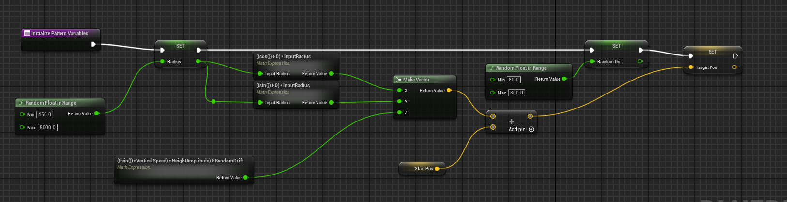
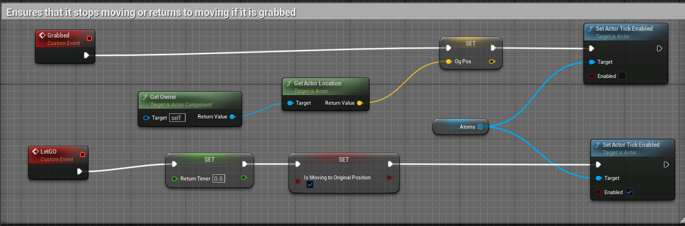
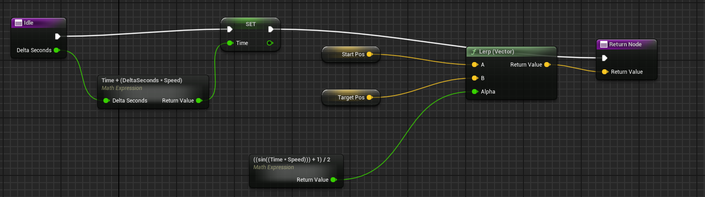
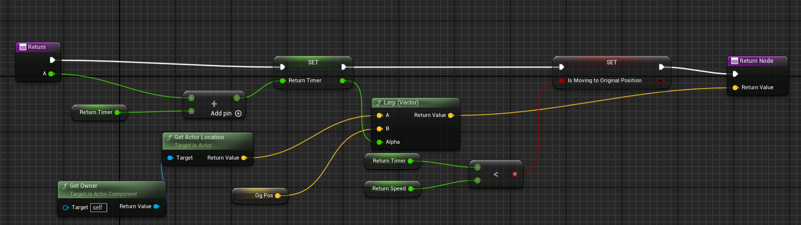
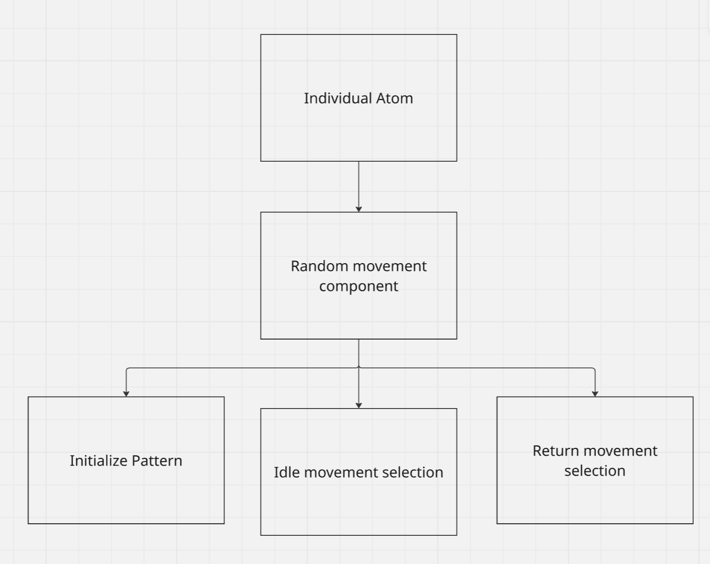

Visual Sheets
First is the activation. It goes through these functions in that order.
The first function is what loads the level and ensures that the order of unloading and loading is correct. When it reaches the end, it resets.
The next step was to ensure the correct animation is playing. I created a list, an enum list, which I assigned each level's main object to by name.
That was then converted into data and placed into the event. The event then breaks the data down, ensures that the required Enum for the sequences are the same as the current and next loaded level, and plays it.
The first thing I did was create the game instance. A multiplayer game instance uses the built-in Unreal Engine online subsystem to host, join, and destroy sessions.
This multiplayer system that I created uses both a local network and an online subsystem.
The difference between an Online Subsystem and a Local Network can be understood with a simple analogy.
Imagine you and your best friend are on the same local network. If you have a letter for them, you simply walk over and hand it to them—fast and efficient, but only possible if you're in the same house (local network).
However, if your friend lives in another city, you need a mailman (Online Subsystem), who relies on a postal service (such as Steam, Epic Games, or Unreal’s built-in services) to deliver the letter.

In short, a Local Network sends data directly between players, while an Online Subsystem routes data through external servers, allowing players from anywhere to connect.
This instance is what will be called upon by all of the buttons on the multiplayer screen, which will be shown next. Without this instance, nothing will work as there will simply be no multiplayer to begin with.
Widget Interaction; Session Creation.

To be able to use any of the functions that I created in the previous blueprint, I needed to create widgets. A widget is a 3D UI element created through the UMG in your game world. You use Widget Blueprints for such things. The first widget I will explain is Session Creation.
The buttons you have are as follows: Up Arrow for increasing the max players, Down Arrow for decreasing, Calibration map (which sends the players to the spatial anchor map, you can ignore this button), and finally, the Create button, which creates the session.
After selecting the desired button and creating an OnClicked event, it runs an event that either decreases or increases the variable of Max players, sets it to a Text type, and places that as the variable for PlayerCap.
The next event is Create Session. Similar to the previous function, upon creating an OnClicked event on the required button, the event of Create Session from the Multiplayer game instance is called, and you create a session with the data of the max players, whether LAN is used or not, and with the correct instance.
Widget Interaction; Session Listing and Joining.
The next step is viewing created sessions. A widget displays the session name, player count, and ping, along with a "Join" button.
First, a custom event, Create Session Item, was made using the Blueprint Session Result variable. It retrieves the session name, player count, and max players, converts them to strings, and updates the UI.
Finally, clicking "Join" triggers the Join Session event in the multiplayer instance, joining the session linked to the displayed data.
Widget Interaction; Matchmaking
To list sessions, a Search Sessions event is created. It uses the Find Sessions function from the multiplayer instance to gather available sessions. Each result creates a Session Item widget (from the previous step) and adds it to the panel, displaying session details.
The Refresh event updates the list when the refresh button is clicked. It first clears the panel (via Clear Children) and then calls Search Sessions to find and display new sessions after a short delay.
Widget Interaction; Putting It All Together.
With all the widgets created, the next step is putting everything together. A new SessionUI widget blueprint is made, serving as a container for the main widgets—one for finding sessions and one for creating them. These are properly aligned, but this blueprint itself has no code.
Next, an actor is created and given a widget component, assigning it SessionUI to display the interface. Since VR doesn’t automatically handle widget interaction, this actor includes blueprint code to ensure smooth player interaction.
The actor makes sure the UI is placed correctly and interacts properly. It first sets up the widget interaction class, positioning it correctly. Then, it tracks the player’s hand movements using the pointer index, allowing both hands to interact with the UI.
Finally, it registers where the pointer last touched using Get Last Hit Result, capturing the exact location.
Working on the atoms ended up taking the longest, which was rather suprising for me. It included a lot of math, and I wanted to make it as dry as possible, as such, I created a component. A component that can be attached to the 6 diffrent types of atoms.
First, we start with the beginplay of an indivual atom, which at the start, disables the tick, which is used to move the object. Here, it plays the looping animation of the atom, and gets the Begin function from the component.
The next part starts with it getting the current actor(atom)'s location. It then ensures that the tick function is disabled, gets the target position of where to go from Initilze pattern variable function, gets a small delay and enables the tick once more
This Blueprint sets up a starting and target position for the object. It begins by choosing a random distance (Radius) between 450 and 1800 units, placing the object somewhere along the edge of a circle.
Using sine and cosine, it calculates X and Y positions for a circular layout, then adds a Z value to form a 3D starting point. A small Random Drift value between 80 and 800 is added to give the motion a natural, swaying feel. Finally, it sets the Target Position + some offset, readying the object for smooth, dynamic movement.

The next part is to check if is grabbed or not. If it is grabbed, it disables the tick, if not, let's say that you let go, it sets a variable called return timer to 0, sets a bool to true, and renables the tick function. However, if is grabbed, it actually saves the position where it was grabbed at.

Finally, the tick, which ensures that the object is moving. Depending on weather the boolean early is true or not, it either moves it in it's looping idle function, or the one time movement of Return.
Idle ensures that it does not speed up at incredible speed and moves back and forth, moving it between StartPos and TargetPos. The alpha, which when it's 0, is at start, and 1 is at target, keeps increasing back and forth, ensuring that it moves back and forth smoothly.
Return meanwhile uses the timer as the Alpha of Og pos and the current location, before getting that as a vector.
When it gets both vectors from Idle and return, it then chooses depending on if it is moving to the og pos or not from the boolean, and makes that as the target of the moving actor.



